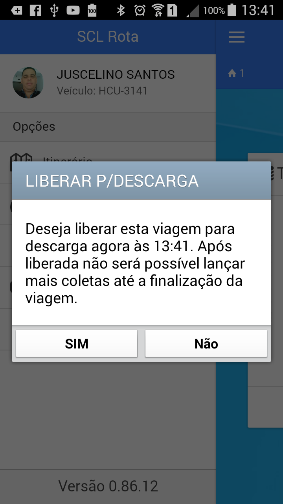
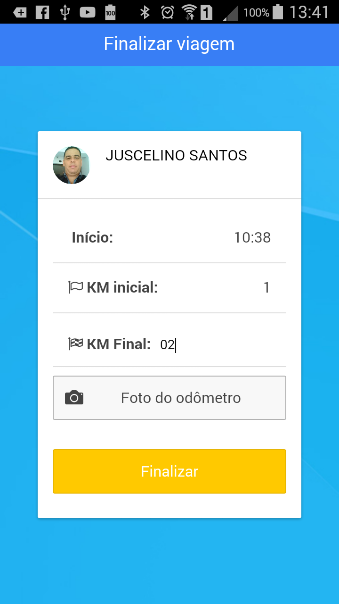
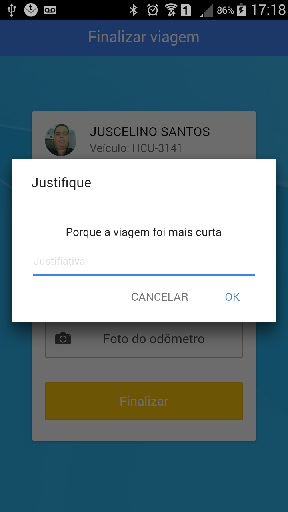
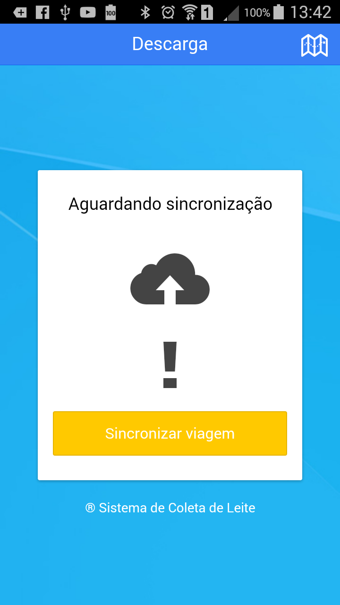
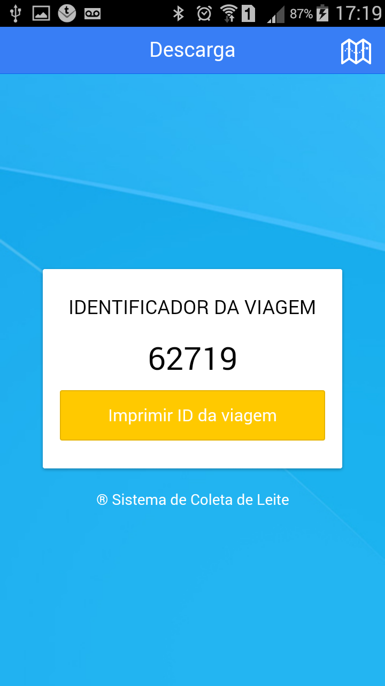

Fechar Viagem
Fechar Viagem#
Após registrar todas as visitas na linha de coleta, o motorista precisará, comandar o fechamento da viagem no App.
Para comandar o fehcamento da viagem, abra o menu lateral por meio do botão ( ). no canto superior esquerdo da tela principal do App.
Escolha a opção Liberar para descarga e confirme o fechamento.

Informar Km Final#
Assim como na abertura de vaigem, no fechamento, o App solicita que seja informado a quilometragem final do hodômetro do veículo, e de acordo com a configuração, poderá ser exigida uma foto de comprovação.

Justificar Quilometragem#
Dependendo das configurações, ao final da viagem, pode ser solicitado que se informe o motivo pelo qual o deslocamento na linha foi Maior ou Menor. Esta informação é util nos acertos de frete (Carreto) com os motoristas que prestam serviços aos Laticínios.
Se o App apresentar uma tela solictando a informação, escreva resumidamente o motivo.

Após informar o Km final da viagem, o sistema exibira a tela de sincronização, momento muito importante para o processo, pois sem a sincronização, os registros feitos na viagem Não chegarão aos computadores do laticínio.

Impressão do Mapa de viagem#
Antes de sincronizar as informações, o agente de coleta deve, de acordo com a orientação do laticínio, imprimir o mapa de coleta.
O Mapa de coleta ou mapa de viagem é uma relação com os registros de todas as anotações feitas nas visitas. Um Resumo de volumes e informações das coletas, bem como os totalizados de volume e deslocamento na linha.
O botão ( ) que fica no canto superior direto da tela de sincronização permite a impressão do mapa, mas no menu lateral também existe a opção de impressão deste mapa, a qualquer momento, desde que não esteja sendo feito nenhum registro de coleta no momento.
Identificador da viagem#
Dependendo da configuração ajustada, o sistema pode exibir a tela de impressão do identificador único da viagem. Este identificador é a garantia de que os registros chegaram ao servidor e que as coletas estão salvas.
